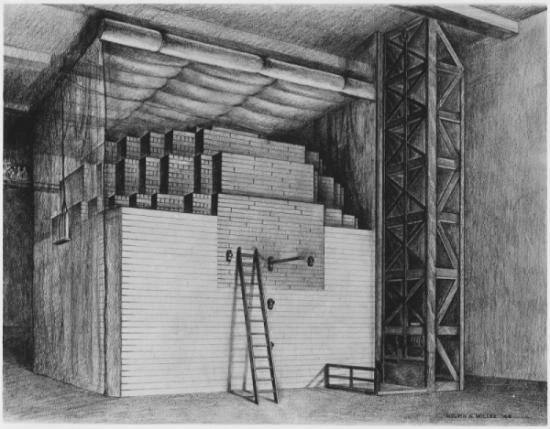

class: center, middle # NE450 ## PRINCIPLES OF NUCLEAR ENGINEERING ### Nuclear fuel cycle overview #### 3 ##### .right[ Bob Borrelli @TheDoctorRAB ] --- # Learning objectives Demonstrating how the nuclear fuel cycle is an holistic system Explaining why the nuclear fuel cycle is what it is Model a nominal solvent extraction system Some of Chapter 4 in the book Read [The Nuclear Fuel Cycle: Waste, Risk, and Economics](http://nature.berkeley.edu/er100/lectures/L16-Nuclear-Fuel-Cycle%20copy.pdf) Check out [Pandora's promise](http://pandoraspromise.com/) if it's still on Netflix There's a lot of pictures here --- class: center,middle  --- class: center,middle  --- class: center,middle  --- class: center,middle  --- class: center,middle ### Check out [plant closure videos](https://courses.lumenlearning.com/uidaho-nuclear/chapter/nuclear-fuel-cycle-system/) on the OER --- class: center,middle [](https://media.mnn.com/assets/images/2011/03/power-reactors-map-sm.jpg) --- class: center,middle ## Let's look at other nations --- class: center,middle  --- class: center,middle  --- <img src=img/japan2.jpg align="left"> Where are they going to dispose of everything? --- class: center,middle  Same problem for disposal --- class: center,middle  --- class: center,middle  --- ## Look at the fuel cycle from systems engineering pov Mining Making the fuel (saw Areva plant in Richland) What a reactor does and the different kinds Recycling (what kinds and how) Back-end management (storage and disposal) The fuel cycle has a lot of technical but institutional issues too How are they functionally dependent? --- ## The fuel used in the commercial reactors is $UO_2$ or $ (Pu+U)O_2$ <img src=img/cycle.components.jpg align="left"> **Front end:** making the fuel and putting it in the reactor **Back end:** what happens when you take it out of the reactor --- ## We have to find uranium first - [$U_3O_8$](https://www.uxc.com/p/prices/UxCPrices.aspx) <img src=img/uranium.world.jpg align="left"> What do you do if you don't have it? Check out Australia --- ## Uranium mining extracts ore from the ground, and then is refined by milling The ore contains $UO_2, UO_3$, and other heavy metal oxides Usually using solvents to leach it from the ground Then it is chemically treated to obtain [‘yellowcake’](http://ibankcoin.com/zeropointnow/files/2017/11/c5fbed2f-575a-41bb-886e-f26700d43255-2060x1236-2.jpeg) $U_3O_8$ Lots of contaminated scrap is produced though (mill tailings) Usually dumped as sludge in ponds (lots) Radioisotopes (radon), heavy metals, chemicals, etc. We have plenty of uranium resources But what if we decide it is too harmful to mine? --- ## $U_3O_8$ is converted to $UF_6$ prior to enrichment with $^{235}U$ Mined U contains $^{234}U$, $^{235}U$, $^{238}U$, .0054%, .72% Because it is a gas at not so high temperature which is easier for enrichment Anyone know how this is done? Enriched to 3% to 5% The byproduct is depleted uranium DU Used for armor and bullets Any idea why? --- class: center,middle  --- class: center,middle [](https://www.cameco.com/uranium_101/static/images/fuel-processing/centrifuge.jpg) --- ## [Separative work unit](https://courses.lumenlearning.com/uidaho-nuclear/chapter/swu/) (SWU) tells of the amount of work to enrich uranium from natural abundance to reactor/weapon grade Dumb acronyms are why people hate nuclear ### $x_F = 0.0072$ ### $x_P = 0.03 - 0.05$ ### $x_W = 0.0002 - 0.0003$ (operator determined) Amount of feed for target product increases linearly with $x_P$ by mass conservation --- <img src=img/mass.conservation.jpg align="left"> $~$ $~$ $~$ $F = P + W$ $F \cdot x_F = P \cdot x_P + W \cdot x_W$ --- ## SWU measures thermodynamic work to separate isotopes ### $SWU \equiv [P \cdot V(x_P)+W \cdot V(x_W)]-F \cdot V(x_F)$ SWU has units of kg because of course it does Where the ['value function'](https://drive.google.com/file/d/0B1ENwqH9aCq5UnZ4NHNCdHZfN1U/view) is defined as: ### $V(x_i) \equiv (2x_i - 1) \cdot ln \frac{x_i}{1-x_i}$ The derivation is based on entropy changes It's a bit much - change in entropy in binary mixture of gases ---  --- ## The fuel fabrication process (LWRs) makes ceramic $UO_2$ pellets Why? Is there anything better? Fuel rods contain a Zr-based alloy [Also generates hydrogen gas](https://inis.iaea.org/collection/NCLCollectionStore/_Public/47/032/47032411.pdf) ### $Zr+2H_2O \rightarrow ZrO_2+2H_2$ That's kind of what happened at [Fukushima](https://www.nature.com/news/2011/110322/full/471417a.html) --- class: center,middle  --- class: center,middle [](https://i.pinimg.com/originals/b4/ce/d5/b4ced507f90b3342963933ee3c4de61f.jpg) --- class: center,middle [](http://www.nucleartourist.com/images/bwrfuel1.jpg) --- class: center,middle ## Macro reactor operation --- ## The first man made reactor was constructed at [University of Chicago](https://courses.lumenlearning.com/uidaho-nuclear/chapter/front-end-of-the-fuel-cycle-2/) in 1942 <a href="https://upload.wikimedia.org/wikipedia/commons/thumb/f/fe/Stagg_Field_reactor.jpg/1200px-Stagg_Field_reactor.jpg" style="float: left"> </a> Made of uranium and graphite blocks Cadmium coated rods And I have a piece of the graphite --- class: center,middle ## Let's look at pictures of the [Hanford B reactor](https://courses.lumenlearning.com/uidaho-nuclear/chapter/front-end-of-the-fuel-cycle-2/) ### Same design as CP1 --- class: center,middle  --- class: center,middle  --- class: center,middle  --- class: center,middle  --- class: center,middle  --- class: center,middle  --- class: center,middle  --- class: center,middle  --- class: center,middle  --- class: center,middle  --- class: center,middle  --- class: center,middle  --- class: center,middle  --- class: center,middle  --- class: center,middle  --- ## A [natural reactor](https://courses.lumenlearning.com/uidaho-nuclear/chapter/nuclear-fuel-cycle-system/) actually happened about [2 billion years ago](https://courses.lumenlearning.com/uidaho-nuclear/chapter/neutronics/) 16 sites operated for about $10^5$ years at 100 kW thermal French company found samples of 0.60% of $^{235}U$ How much is there normally? Uranium rich mineral deposits were infiltrated by groundwater which served as moderator --- class: center,middle [](https://encrypted-tbn0.gstatic.com/images?q=tbn:ANd9GcRrtMtEjUjICm7oQO3zRlKiI4WLtiLxpHOFGU5BGVzf7E8MFcz5) --- class: center,middle [](https://upload.wikimedia.org/wikipedia/commons/thumb/9/9f/Gabon_Geology_Oklo.svg/1200px-Gabon_Geology_Oklo.svg.png) --- ## [EBR I](https://courses.lumenlearning.com/uidaho-nuclear/chapter/nuclear-fuel-cycle-system/) was the first reactor to [generate electricity](https://courses.lumenlearning.com/uidaho-nuclear/chapter/fuel-cycle-analysis/) In 1951 - now a museum, open to the public for free About 200 kW of electricity Also was a breeder and first to confirm Fermi’s theory ‘Fast’ reactor, metal fuel and molten salt designs Then the commercial reactors switched to ceramic and water Why? Now the so called Generation IV reactor designs use metals and salts --- class: center, middle [](https://www.popsci.com/sites/popsci.com/files/styles/1000_1x_/public/import/2013/images/2012/11/electricpower.jpg?itok=5XLDCm8f) --- class: center, middle ## More pictures --- class: center, middle  --- class: center, middle  --- class: center, middle  --- class: center, middle  --- class: center, middle  --- class: center, middle  --- class: center, middle  --- class: center, middle  --- class: center, middle  --- class: center, middle  --- class: center, middle  --- class: center, middle  --- class: center, middle  --- class: center, middle  --- ## EBR-II is an SFR design for 62.5 MW that operated from 1964 to 1994 19 MW electricity operated for 30 years with no accidents 'Engineering scale' facility Breeder reactor with onsite reprocessing (pyroprocessing) Famous test of [passive safety systems](https://youtu.be/Sp1Xja6HlIU) --- class: center,middle [](https://upload.wikimedia.org/wikipedia/commons/thumb/7/7d/EBR-II_primary_tank.png/388px-EBR-II_primary_tank.png) --- ## [TREAT](https://courses.lumenlearning.com/uidaho-nuclear/chapter/front-end-of-the-fuel-cycle/) is an air cooled, graphite moderated thermal reactor Operation from 1959 to 1994 Transient reactor tests to simulate all sorts of reactor accidents George Imel Restarted and working on experiments! Because of Fukushima, TREAT will test 'accident tolerant fuels' Everyone is excited 100 kW, transients up to 19 GW --- class: center,middle  --- ## Nuclear reactors are used on submarines and aircraft carriers Nautilus launched in 1954, 25 year life span Nimitz-class aircraft carriers have 2 reactors, about 100 MW, 23 year life span How about now? --- class: center,middle [](https://www.independent.co.uk/life-style/history/a-day-that-shook-the-world-first-nuclear-submarine-launched-2189571.html) --- #### [danger zone](https://youtu.be/siwpn14IE7E)  --- class: center,middle ## Reactors make a lot of hot water --- ## Reactors were first built in the 1950s <img src=img/generation.jpg align="left"> Gen IV is essentially based on Gen I Different material for fuels and coolant Moderators not needed for some Passive safety systems Proliferation issues - so they say --- ## The PWR heats water but does not boil <img src=img/pwr.system.jpg align="left"> Water is moderator, reflector, coolant --- ## The BWR does boil water in the reactor vessel  --- #### The CANDU design uses heavy water (moderator) and natural uranium (also thermal)  --- ## More on CANDU Used in Canada and marketed to other nations South Korea, China, India have some PWR design (two loops) The heavy water is less absorbing so natural U can be used But also more collisions would be needed than in LWRs The core would be bigger But can use used fuel from LWRs, and a Th cycle So is there an advantage? Technical? Institutional? --- class: center, middle  --- class: center,middle ## Reprocessing --- ### [Aqueous recycling](http://www.state.nv.us/nucwaste/library/reprocessing/nrcseminarreprocessing_terry_todd.pdf) is the [commercially available process](https://courses.lumenlearning.com/uidaho-nuclear/chapter/countercurrent-solvent-extraction/) for the LWRs now Major nations are France, Japan, Russia, India 'Recycle' is better for the brand About 1% 235U and 1% Pu in used fuel The most common is PUREX This uses an organic phosphate and nitric acid Solvent extraction process where U and Pu are separated Then created into a MOX fuel So for PUREX, what is a big risk? --- class: center,middle [](http://www.paducahvision.org/img/uranium/uranium4.jpg) --- ### U and Pu are chemically separated through organic solvent equilibrium extraction U and Pu exist in a number of valence states Because of different redox potentials, reduction or oxidation can be done to one without disturbing the other Each exhibits different solubilities in organic solvent (TBP) 0- Chop up everything, remove FP gases, dissolve in aqueous solution 1- Separate U/Pu from fission products by dissolving in solvent 2- Reduce Pu to 3+ because it is highly insoluble in solvent (U 6+) 3- Back extract Pu into aqueous solution 4- Strip U from solvent into aqueous solution --- ### U and Pu are chemically separated through organic solvent equilibrium extraction Aqueous solution is nitric acid Does generate a lot of liquid waste Mass transfer to solvent phase = extraction Mass transfer to aqueous phase = stripping --- ### Mass transfer operates in a continuous, multistage, countercurrent mode High separation factor High processing rates Streams flow countercurrently, so concentration is relatively constant Solvent must be recycled because it's not cheap First applied to extract Pu for weapons production in 1952 at Hanford site --- ## Metals in 4+ and 6+ are extracted #### $(UO_2)^{2+}(aq) + 2(NO_3)^-(aq) + 2TPB(o) \leftrightarrow UO_2(NO_3)_2 \cdot 2TBP(o)$ #### $An^{4+}(aq) + 4NO_3^-(aq) + 2TBP(o) \leftrightarrow An_2(NO_3)_4 \cdot 2TBP(o)$ Pu (as 4+) co-extracted with U Anything 3+ or lower is not Waste is vitrified into a borosilicate glass waste form for disposal Well characterized material with 50+ years of scientific study Very stable --- class: center, middle  --- ## Typical mass conservation is used to model [solvent extraction](https://courses.lumenlearning.com/uidaho-nuclear/chapter/countercurrent-solvent-extraction/) This is from Benedict Distribution coefficient = organic/aqueous phase concentration at equilibrium ### $D \equiv \frac{y}{x}$ When an aqueous solution of an extractable component is brought into equilibrium with an immiscible solvent for the component and the two phases are then separated, the component will be found distributed between the two phases --- ## We then derive the material balance on the extractable component ### $Fz = Fx + Ey$ With $D$ for the system defined before --- class: center,middle  --- ## Derive the concentration that is extracted ### $D \equiv \frac{y}{x}$ ### $Fz = Fx + Ey$ ### $\therefore y = \frac{Dz}{1+\frac{ED}{F}}$ And the fraction extracted is ### $\rho = \frac{Ey}{Fz} = \frac{1}{1+\frac{F}{ED}}$ For design then, you only need 3 parameters --- ## Derive the solvent feed needed for a given extraction ### $\frac{E}{F} = \frac{\rho}{D(1-\rho)}$ What is the functional dependence of $E(\rho)$? Amount of used fuel isn't actually a variable --- ## Reduce the amount of solvent needed by using multiple contact stages With many stages, high extraction fraction can be obtained Solvent is expensive, so recycling stages are also added to strip out extract Multiple components can be extracted from organic phase if D is different enough So this would be needed to completely separated U, Pu Physical conditions affecting D: Element extracted Redox potential of aqueous phase Solvent Concentrations [H+]aq --- class: center, middle [](http://www.paducahvision.org/img/uranium/uranium4.jpg) --- class: center, middle  --- class: center,middle  --- ## Now apply same mass conservation to multistage extraction Assume equilibrium between phases Material balance on extractable component below stage n  ### $y_{n-1} - y_0 = \frac{F}{E}(x_n-x_1)$ For any stage ### $y_n \equiv D_nx_n$ --- ### [McCabe-Thiele diagram](http://ljs.academicdirect.org/A20/079_094.pdf) can be used for constructing graphical solution for for stage concentrations Basically gives the number of stages for an extraction concentration $x_F$ By graphing $y_{n-1} - y_0 = \frac{F}{E}(x_n-x_1)$ on y versus x Construct operating line to satisfy the above and pass through $x_1,y_0$ with slope $\frac{F}{E}$ relative to equilibrium line $y_n = D_nx_n$ Cannot really change equilibrium line because it is based on $D$ Reduce the concentration of the extractable component from $x_F$ to $x_1$ with $\frac{F}{E}$ Start at $x_1,y_0$ and move up --- class: center,middle [](http://www.tsijournals.com/articles-images/chemical-technology-McCabe-Thiele-uranium-11-5-102-g015.png) --- ## Derive the extraction factor for multiple stages ### $\rho \equiv \frac{Ey_N}{Fx_F}$ Or ### $1 - \rho = \frac{x_1}{x_F}$ What does this tell us? And feed ratio can be defined in terms of $f(\rho)$ as ### $\frac{E}{F} = \frac{\rho x_F}{y_N-y_0}$ What about here? --- class: center,middle ## How many stages for complete extraction? ## What does that look like on McCabe-Thiele? --- ## Apply these concepts to model multistage extraction based on [Kremser equation](http://facstaff.cbu.edu/rprice/lectures/kremser.html) From before $y_{n-1} - y_0 = \frac{F}{E}(x_n-x_1)$ $y_n \equiv D_nx_n$ And the extraction factor is $\beta \equiv \frac{DE}{F}$ Then  ### $y_N = \frac{\beta^N - 1}{\beta - 1}(Dx_1-y_0) +y_0$ --- ## This can also be applied if there are two extractable components in the feed Given ### $D_A,D_B,\beta_A,\beta_B$ Define decontamination factor. What does this mean? ### $f_{AB} \equiv \frac{\rho_A}{\rho_B}$ ### $f_{AB} = \frac{\beta_A}{\beta_B}(\frac{\beta^N_A - 1}{\beta^N_B - 1})(\frac{\beta^{N+1}_B - 1}{\beta^{N+1}_A - 1})$ for $y_0 = 0$ --- class: center,middle ## Back-end management overview --- ## What do you do with the fuel when you take it out of the reactor? Either the used fuel is reprocessed or disposed But there is always going to be some high-level waste High-level waste = highly radioactive, some long-lived, toxic So far in USA, used fuel is stored in the pool and in dry casks What’s the problem with keeping the spent fuel just lying around? Who has 'active' repositories? How is safety determined? Watch 'Into Eternity' if you can --- ## So what is supposed to be done with the waste? NAS in 1957 recommended deep disposal in salt Why salt? Lyons KS was investigated 1957-72, but scrapped due to public opposition Why would the public possibly be opposed? WIPP authorized in 1980 and received waste first in 1999 Zero accidents recorded, not counting the moron who lost his badge when we were there WIPP = TRU waste (from weapons program) [WIPP accident](https://courses.lumenlearning.com/uidaho-nuclear/chapter/back-end-of-the-fuel-cycle/) --- ## Nuclear waste policy act (1982) is the basis for HLW management in USA Established disposal in geologic formation Sites studied: Hanford, Yucca Mountain, Texas Amendment in 1987: only Yucca Mountain (70000 MTHM) Supposed to start in 1998 A license application was submitted to NRC in 2008 Obama Administration withdrew any further funding August 2013 U.S. Court of Appeals DC NRC resumed work on safety review January 2015 NRC Safety Evaluation Report Working Environmental Impact Statement early [2016](https://www.nrc.gov/waste/hlw-disposal/key-documents.html) --- class: center,middle ## But what happens if the license is granted? --- class: center, middle ## How should nuclear facilities be cited? --- ## [Blue Ribbon Commission](https://courses.lumenlearning.com/uidaho-nuclear/chapter/back-end-of-the-fuel-cycle/) was formed to review back-end policy Really, because there wasn't any policy 1- A new, consent-based approach to siting future nuclear waste management facilities. 2- A new organization dedicated solely to implementing the waste management program and empowered with the authority and resources to succeed. 3- Access to the funds nuclear utility ratepayers are providing for the purpose of nuclear waste management. 4- Prompt efforts to develop one or more geologic disposal facilities. 5- Prompt efforts to develop one or more consolidated storage facilities. --- 6- Prompt efforts to prepare for the eventual large-scale transport of spent nuclear fuel and high-level waste to consolidated storage and disposal facilities when such facilities become available. 7- Support for continued U.S. innovation in nuclear energy technology and for workforce development. 8- Active U.S. leadership in international efforts to address safety, waste management, non-proliferation, and security concerns. Not particularly revolutionary (Peterson), but what other nations are doing around the world The point of the BRC was to establish consensus --- ## The Energy Policy Act in (1992) set regulatory framework for repositories 40CFR197: EPA radioactivity releases 10CFR63: Construction, operation, closure NAS review in 1995 Extended time frame of peak risk to 1 million years (of adverse health effects) So what do you do to demonstrate compliance out to 1 million years? [Summary of TSPA](https://courses.lumenlearning.com/uidaho-nuclear/chapter/back-end-of-the-fuel-cycle/) by Peter Swift More in depth discussion repository design later --- class:center, middle  --- class: center, middle  --- class: center,middle